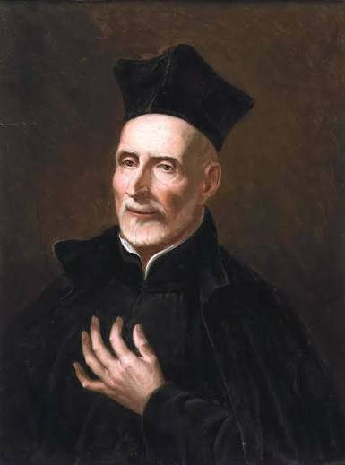

Información
San José de Calasanz (1557-1648) fue un sacerdote, pedagogo y santo español, recnocido historicamente por haber sido el pionero y fundador de la primera escuela pública, popular y gratuita de Europa. Nació en Peralta de la Sal (Aragón) en el seno de una familia acomodada y recibió una sólida formación universitaria en Teología y Derecho Canónico.
Tras su ordenación sacerdotal en 1853 y haber desempeñado diversos cargos eclesiásticos en España, viajó a Roma en 1592. Allí su vida dio un giro radical al entrar en contacto con la marginalidad urbana y la masa de niños huérfanos y desfavorecidos del barrio del Trastévere que carecían de cualquier posibilidad de educación.
Su modelo pedagógico introdujo innovaciones revolucionarias para la época: fue el creador de la enseñanza graduada en aulas por niveles académicos, promovió el aprendizaje práctico de la lectura, escritura y aritmética básica, e introdujo al estudio de las ciencias exactas y las matemáticas (manteniendo incluso una célebre amistad y apoyo hacia Galileo Galilei).
- 1557: Nace en Peralta de la Sal (Aragón) en el seno de una familia acomodada.
- 1583: Es ordenado sacerdote tras completar una sólida formación universitaria en Teología y Derecho Canónico.
- 1592: Viaja a Roma, donde entra en contacto con la marginalidad y la falta de educación de los niños huérfanos del barrio del Trastévere.
- 1597: Abre en la parroquia de Santa Dorotea la primera escuela pública, popular y gratuita de Europa.
- 1622: El papa Gregorio XV aprueba oficialmente la Orden de las Escuelas Pías (escolapios) bajo el lema "Piedad y Letras".
- 25 de agosto de 1648: Fallece en Roma a los 90 años tras haber afrontado adversidades e investigaciones de la Inquisición con serenidad.
- 1748: Es beatificado por la Iglesia Católica.
- 1767: El papa Clemente XIII lo canoniza, siendo posteriormente proclamado Patrono Universal de las Escuelas Cristianas y del Maestro.